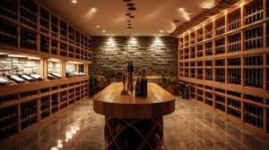

Nossa História
A Vinharia Agnello iniciou suas atividades em São Paulo há mais de 15 anos, com uma única loja física e a proposta de oferecer uma grande variedade de vinhos nacionais e importados ao público.
Desde o início, a empresa se destacou pelo atendimento personalizado. Seus vendedores são altamente capacitados e auxiliam os clientes na escolha dos vinhos, explicando características das uvas, regiões produtoras, vinícolas e harmonizações com alimentos.
A vinharia é uma empresa familiar, administrada por Giulio e sua filha Bianca, e conta com uma equipe dedicada que atua nas áreas de vendas, estoque e administração.
Um dos grandes diferenciais da empresa é o cuidado com a armazenagem dos vinhos, garantindo que fatores como temperatura, luz e movimentação não comprometam a qualidade das bebidas, especialmente no caso de vinhos raros e de alto valor.
Durante a pandemia, a Vinheria Agnello enfrentou desafios devido à redução do movimento na loja física. Isso levou à necessidade de adaptação ao ambiente digital, com a criação de um e-commerce, buscando manter a qualidade do atendimento também no meio online.

Linha do tempo
- ~2008 - Fundação da Vinharia Agnello em São Paulo
- 2008-2020 - Consolidação da loja física e atendimento especializado
- 2020 - Impacto da pandemia e queda no movimento presencial
- 2021 - Decisão de entrar no mercado digital (e-commerce)
- Atualidade - Modernização e foco na experiência do cliente online